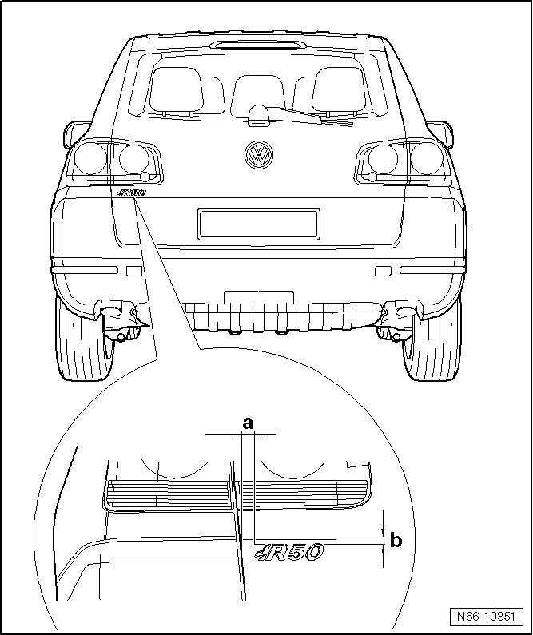
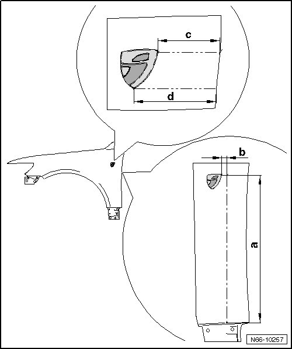
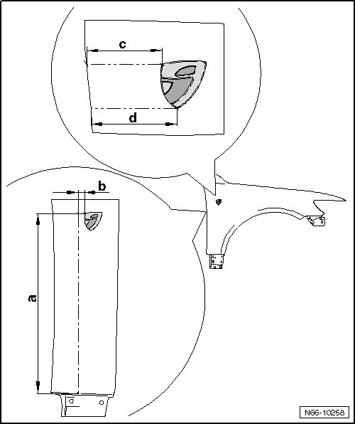
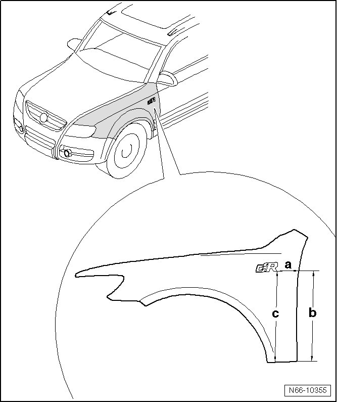

Body Emblem: Specifications
Name Plates
--> [ Rear Name Plate Dimensions ]
--> [ Fender Name Plate Dimensions, Individual ]
--> [ Name Plate Dimensions, Fender, R-Line ]
Rear Name Plate Dimensions

1 Dimension - a - = 40 mm
• From the outer edge of the rear lid to the name plate.
2 Dimension - b - = 20 mm
• From upper edge of rear lid up to name plate.
Fender Name Plate Dimensions, Individual
Left Name Plate Dimensions

1 Dimension - a - = 479 mm
• Transfer - dimension a - from the bottom edge of the name plate to the fender
2 Dimension - b - = 10 mm
• Transfer the - dimension b - from the end point of - dimension a - out to the corner point of the emblem.
3 Dimension - c - = 83 mm
• Check the distance between the upper edge of the name plate to the edge of the fender with - dimension c -.
4 Dimension - d - = 112 mm
• Check the distance between the lower edge of the name plate to the edge of the fender with - dimension d -.
Right Name Plate Dimensions

1 Dimension - a - = 481 mm
• Measure - dimension a - from the bottom edge of the fender out on the fender.
2 Dimension - b - = 30 mm
• Transfer the - dimension b - from the end point of - dimension a - out to the corner point of the emblem.
3 Dimension - c - = 103 mm
• Check the distance between the upper edge of the name plate to the edge of the fender with - dimension c -.
4 Dimension - d - = 112 mm
• Check the distance between the lower edge of the name plate to the edge of the fender with - dimension d -.
Name Plate Dimensions, Fender, R-Line
• The dimensions for the R-line fender name plate apply to the left side. It can also be applied to the right side.
Name Plate Dimensions
• Dimension - b - and dimension - c - specify the inclination of the name plate. The name plate is installed parallel to the lower edge of the fender.

1 Dimension - a - = 72 mm
• From the lower edge of the fender to the corner of the name plate
2 Dimension - b - = 473 mm
• From the lower rear edge of the fender to the - dimension a -.
3 Dimension - c - = 473 mm.
• From the lower front edge of the fender to the corner of the name plate